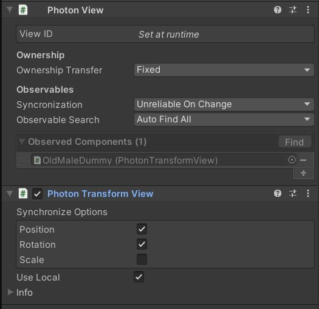
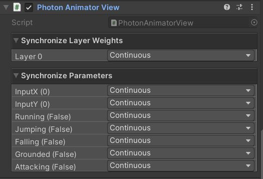

Synchronisatoin des Mouvements
Nous nous sommes rapidement attelés à rendre chaque joueur visible pour les autres et à synchroniser leurs déplacements. Pour réussir cette tâche nous avons dû utiliser et ajouter les composants Photon View et Photon Transform View à chaque joueur.

Les Animations
Cependant nous avons rencontré plusieurs problèmes lors de cette dernière étape de synchronisation entre les différents joueurs, notamment avec l'animation des personnages qui empêchait le bon fonctionnement de ces scripts. Depuis la rectification de l'animation et l'ajout du composant Photon Animator View effectué, les différents joueurs peuvent voir les mouvements des autres.
